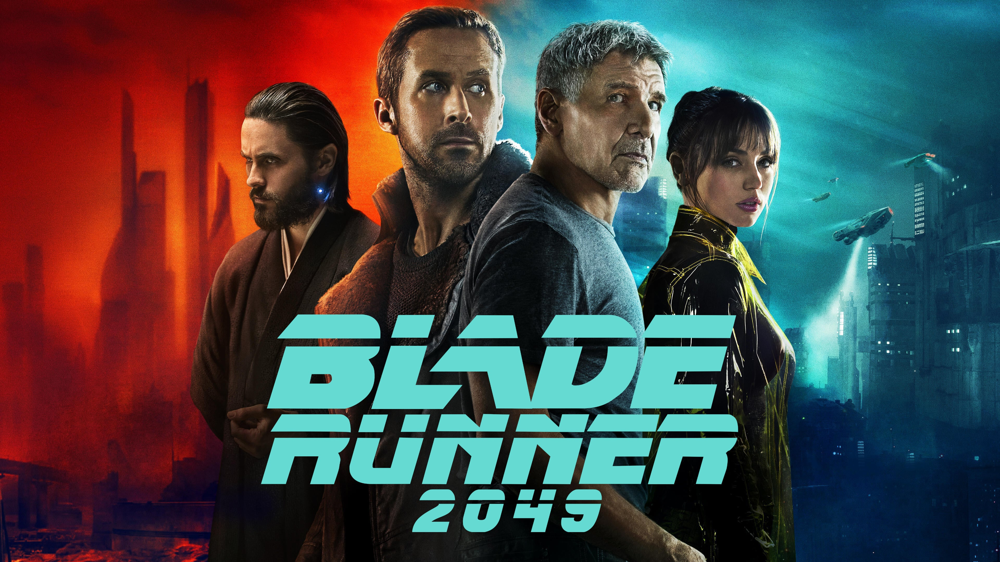
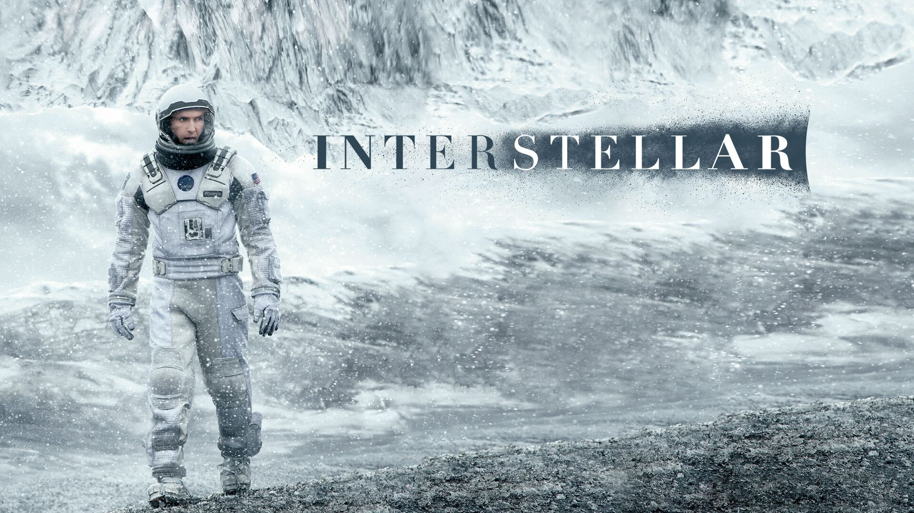
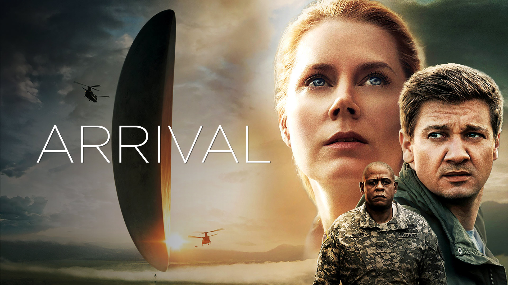
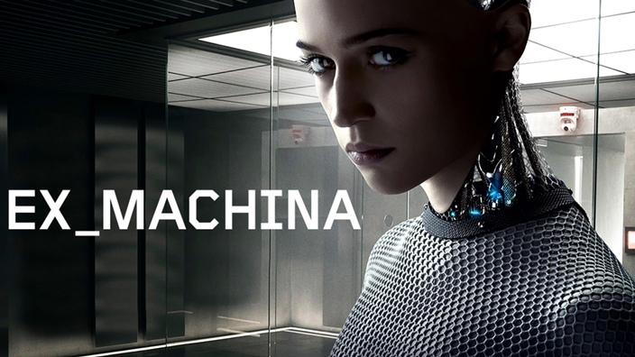
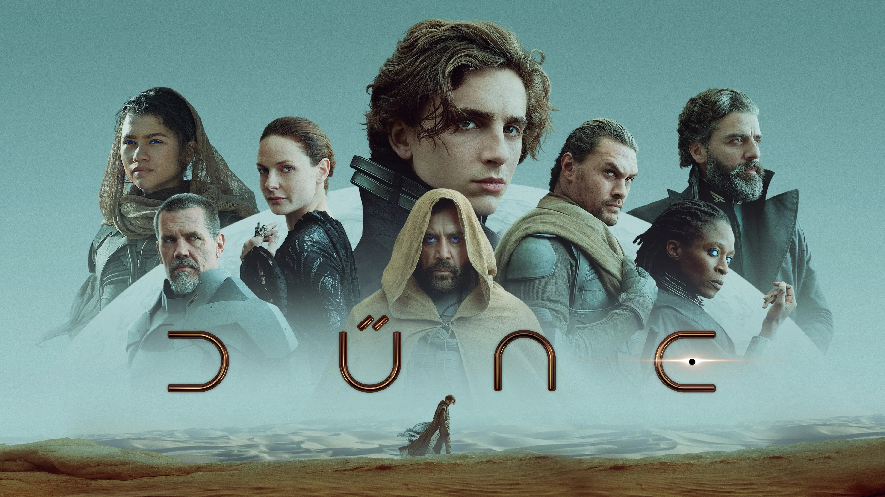
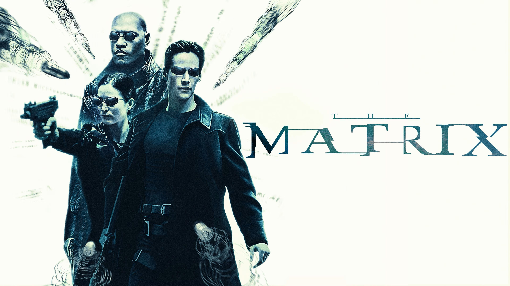
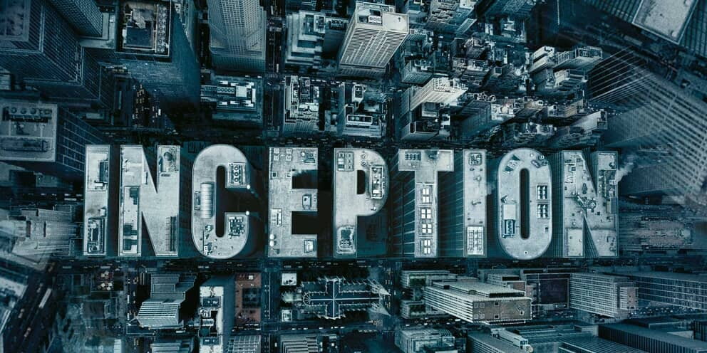
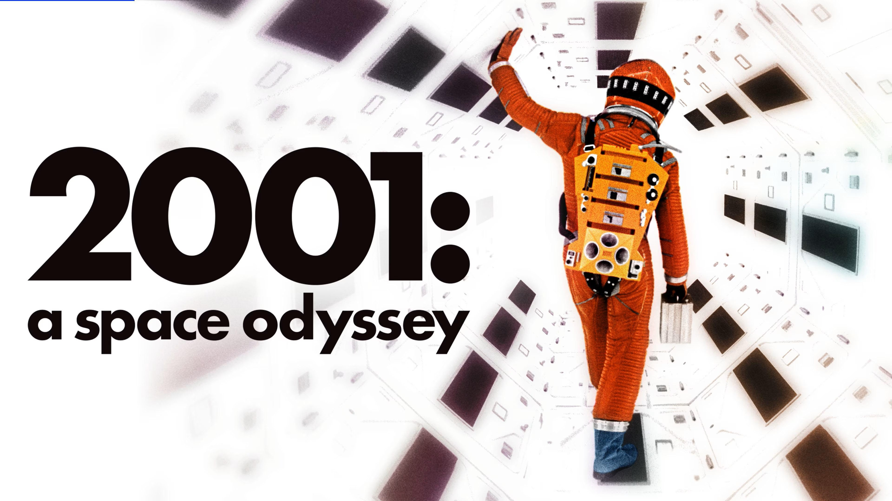
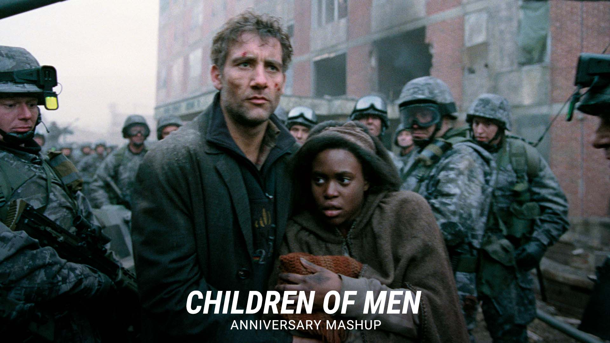

Blade Runner 2049
Bir replikant avcısı olan K, geçmişin izlerini sürerken insanlık ve yapay yaşam arasındaki sınırları sorgulatan bir sırrı açığa çıkarır.
Yönetmen: Denis Villeneuve
Yıl: 2017
Farklı gelecek tasarımlarını ve insanlık hâllerini anlatan dokuz filmi yönetmenleri ve çıkış yıllarıyla birlikte keşfedin.
9 sonuç
Aramanızla eşleşen film bulunamadı.

Bir replikant avcısı olan K, geçmişin izlerini sürerken insanlık ve yapay yaşam arasındaki sınırları sorgulatan bir sırrı açığa çıkarır.
Yönetmen: Denis Villeneuve
Yıl: 2017

Yaşanabilir bir gelecek arayışındaki bir ekip, insanlığın hayatta kalabilmesi için uzayın ve zamanın sınırlarını aşan bir yolculuğa çıkar.
Yönetmen: Christopher Nolan
Yıl: 2014

Dünya’ya gelen gizemli ziyaretçilerle iletişim kurmaya çalışan bir dilbilimci, dili, zamanı ve seçimlerin sonuçlarını yeniden düşünür.
Yönetmen: Denis Villeneuve
Yıl: 2016

Genç bir yazılımcı, gelişmiş bir yapay zekânın bilincini değerlendirmek üzere katıldığı deneyde güven ve kontrolün anlamını sorgulamaya başlar.
Yönetmen: Alex Garland
Yıl: 2014

Paul Atreides, evrenin en değerli kaynağının bulunduğu Arrakis’te ailesinin kaderiyle ve gezegenin halkının geleceğiyle yüzleşir.
Yönetmen: Denis Villeneuve
Yıl: 2021

Neo, gündelik gerçekliğin ardında insanlığı esir tutan bir simülasyon olabileceğini öğrenir ve bildiği dünyanın kurallarını sorgular.
Yönetmenler: Lana Wachowski ve Lilly Wachowski
Yıl: 1999

Rüyalar aracılığıyla başkalarının zihnine giren bir ekip, bu kez bir fikri yerleştirmek için katman katman bir bilinç yolculuğuna çıkar.
Yönetmen: Christopher Nolan
Yıl: 2010

Gizemli bir yapıtaşının izini süren insanlık, uzay keşfi ve yapay zekâ üzerinden evrendeki yerini sorgular.
Yönetmen: Stanley Kubrick
Yıl: 1968

İnsanlığın doğurganlığını yitirdiği yakın gelecekte, umudun son ihtimalini korumaya çalışan bir adam tehlikeli bir yolculuğa çıkar.
Yönetmen: Alfonso Cuarón
Yıl: 2006